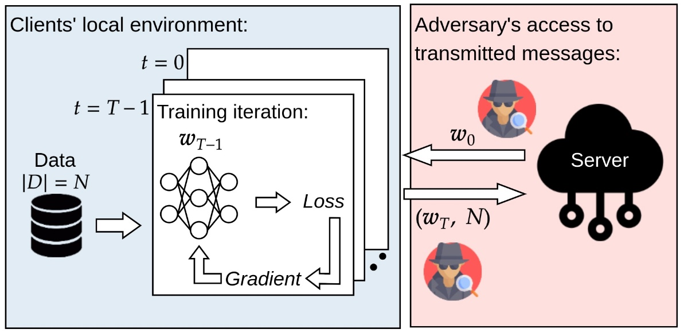

Surrogate Model Extension (SME): A Fast and Accurate Weight Update Attack on Federated Learning
ICML 2023International Conference on Machine Learning

In brief
In real federated learning, clients share weight updates accumulated over many local steps — not per-step gradients — which was presumed to blunt gradient-inversion attacks. SME breaks that assumption with one elegant trick: search for a surrogate model on the line segment between the received and returned weights whose gradient aligns with the weight update, justified by the two-dimensional character of gradient flow and the low-rank structure of local updates. The result is state-of-the-art reconstruction of private data at up to 100x less compute than the prior best attack.
Key takeaways
- Plain gradient inversion on multi-step weight updates suffers a quantifiable "intrinsic objective error" that grows with the number of local steps — the reason FedAvg seemed safer than per-step sharing.
- Prior simulation attacks (e.g. DLFA) sidestep that error by mimicking every local training step, but need long chains of second-order derivatives — computationally prohibitive at realistic scale.
- SME adds a single scalar to the attack: the surrogate model is a convex combination of the weights before and after local training, chosen so its gradient aligns with the reversed weight update — justified by 2D gradient-flow analysis and the observed low-rank subspace of local steps.
- Any gradient-inversion method can then be applied through the surrogate, at negligible extra cost — achieving state-of-the-art reconstruction while running up to 100x faster than the simulation-based SOTA.
- The practical message for FL deployments: sharing multi-epoch weight updates is not a meaningful privacy defense on its own.
Abstract
In Federated Learning (FL) and many other distributed training frameworks, collaborators can hold their private data locally and only share the network weights trained with the local data after multiple iterations. Gradient inversion is a family of privacy attacks that recovers data from its generated gradients. Seemingly, FL can provide a degree of protection against gradient inversion attacks on weight updates, since the gradient of a single step is concealed by the accumulation of gradients over multiple local iterations. In this work, we propose a principled way to extend gradient inversion attacks to weight updates in FL, thereby better exposing weaknesses in the presumed privacy protection inherent in FL. In particular, we propose a surrogate model method based on the characteristic of two-dimensional gradient flow and low-rank property of local updates. Our method largely boosts the ability of gradient inversion attacks on weight updates containing many iterations and achieves state-of-the-art (SOTA) performance. Additionally, our method runs up to 100x faster than the SOTA baseline in the common FL scenario. Our work re-evaluates and highlights the privacy risk of sharing network weights.
BibTeX
@inproceedings{zhu_sme,
title = {Surrogate Model Extension ({SME}): A Fast and Accurate Weight Update Attack on Federated Learning},
author = {Zhu, Junyi and Yao, Ruicong and Blaschko, Matthew B.},
year = {2023},
booktitle = {International Conference on Machine Learning},
url = {https://arxiv.org/abs/2306.00127},
}